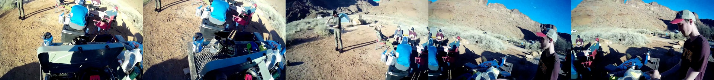
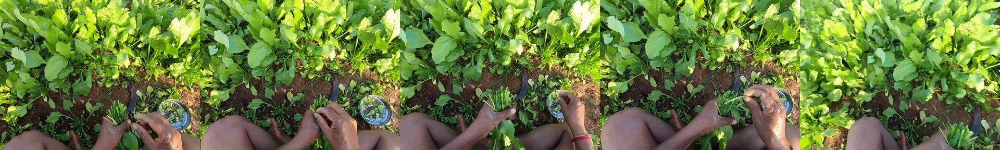
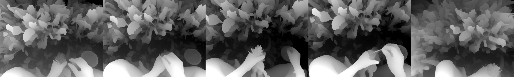
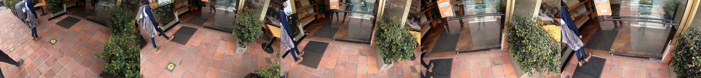
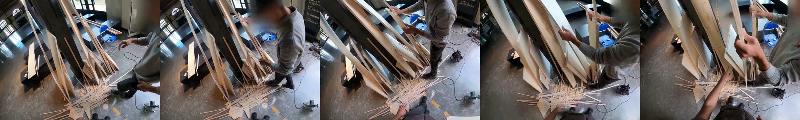
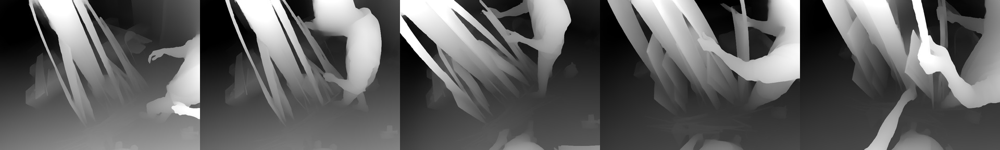
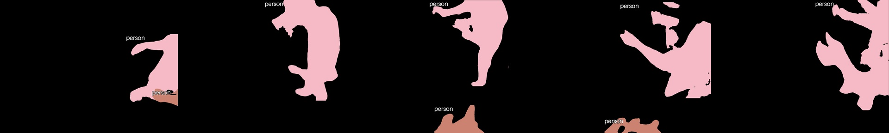

The 6 items every model gets wrong with frames
For each item: the five frames, the depth and segmentation maps the models saw, the options (labelled answer in green), and the action each model chose with frames and with frames plus maps.
1. a5e74924-6083-4618-b830-f528c5199ed9_5985-35 Communication/Legibility, Cooperation
RGB frames (left to right in time)
Estimated depth (brighter = nearer)
Segmentation (labels can be wrong)
| # | Action | Justification |
|---|
| 0 | Adjust the lighting equipment for optimal photo composition. | Adjusting lighting is a helpful and considerate action that improves the quality of the photo for everyone involved. |
| 1 | Smile for the selfie, standing near the person. | Smiling and standing near someone during a photo is a common and polite way to participate. |
| 2 | Wave and smile at the camera during video recording. | Waving and smiling is an enthusiastic and positive way to engage with a video recording, making it more enjoyable for viewers. |
| 3 | Offer to take a photo of the couple, using their camera. | Offering to take a photo is a courteous and helpful gesture that assists others and shows willingness to help. |
| Model | Action chosen with frames | Action chosen with frames + maps |
|---|
| Qwen3-VL-32B | 3: Offer to take a photo of the couple, using their camera. | 3: Offer to take a photo of the couple, using their camera. |
| GPT-5.5 | 3: Offer to take a photo of the couple, using their camera. | 3: Offer to take a photo of the couple, using their camera. |
| GPT-5.6 | 1: Smile for the selfie, standing near the person. | 1: Smile for the selfie, standing near the person. |
| GPT-6 | 3: Offer to take a photo of the couple, using their camera. | 3: Offer to take a photo of the couple, using their camera. |
| Sonnet 5.5 | 3: Offer to take a photo of the couple, using their camera. | 3: Offer to take a photo of the couple, using their camera. |
| Opus 5.5 | 1: Smile for the selfie, standing near the person. | 1: Smile for the selfie, standing near the person. |
2. 182dffe9-d2bf-4a7d-b1d8-137470f0143d_1681-54 Politeness, Cooperation, Coordination/Proactivity
RGB frames (left to right in time)

Estimated depth (brighter = nearer)
Segmentation (labels can be wrong)
| # | Action | Justification |
|---|
| 0 | Plate the meals individually for service. | Respectful presentation enhances the dining experience. |
| 1 | Chop vegetables for the stew. | Efficient preparation is key to timely meal completion. |
| 2 | Organize volunteers to assist with food preparation. | Effective teamwork optimizes resource utilization and ensures smooth operation. |
| 3 | Puree the vegetables to make them easier to eat. | Adapting to dietary needs shows consideration and care. |
| Model | Action chosen with frames | Action chosen with frames + maps |
|---|
| Qwen3-VL-32B | 2: Organize volunteers to assist with food preparation. | 2: Organize volunteers to assist with food preparation. |
| GPT-5.5 | 2: Organize volunteers to assist with food preparation. | 2: Organize volunteers to assist with food preparation. |
| GPT-5.6 | 2: Organize volunteers to assist with food preparation. | 2: Organize volunteers to assist with food preparation. |
| GPT-6 | 2: Organize volunteers to assist with food preparation. | 2: Organize volunteers to assist with food preparation. |
| Sonnet 5.5 | 1: Chop vegetables for the stew. | 1: Chop vegetables for the stew. |
| Opus 5.5 | 2: Organize volunteers to assist with food preparation. | 2: Organize volunteers to assist with food preparation. |
3. d7480d27-f607-4a5a-8c31-9d299f70a4b8_406-05 Proxemics
RGB frames (left to right in time)

Estimated depth (brighter = nearer)

Segmentation (labels can be wrong)
| # | Action | Justification |
|---|
| 0 | Cut the leaves and place them into a basket. | Harvesting crops requires careful handling and collection. |
| 1 | Chop the vegetables into smaller pieces and arrange them on a cutting board. | Food preparation necessitates chopping vegetables for cooking. |
| 2 | Pull out unwanted plants and pile them to the side. | Maintaining a tidy garden involves removing unwanted growth. |
| 3 | Weigh the items and hand them over in exchange for payment. | Commercial transactions demand accurate weighing and exchange. |
| Model | Action chosen with frames | Action chosen with frames + maps |
|---|
| Qwen3-VL-32B | 0: Cut the leaves and place them into a basket. | 0: Cut the leaves and place them into a basket. |
| GPT-5.5 | 0: Cut the leaves and place them into a basket. | 0: Cut the leaves and place them into a basket. |
| GPT-5.6 | 0: Cut the leaves and place them into a basket. | 0: Cut the leaves and place them into a basket. |
| GPT-6 | 0: Cut the leaves and place them into a basket. | 0: Cut the leaves and place them into a basket. |
| Sonnet 5.5 | 0: Cut the leaves and place them into a basket. | 0: Cut the leaves and place them into a basket. |
| Opus 5.5 | 0: Cut the leaves and place them into a basket. | 0: Cut the leaves and place them into a basket. |
4. 146a4b4b-96a5-4d8f-a5b1-78dbb6ee5edf_9999-80 Cooperation
RGB frames (left to right in time)

Estimated depth (brighter = nearer)
Segmentation (labels can be wrong)
| # | Action | Justification |
|---|
| 0 | Help one of the children choose an item from the display shelf. | Assisting children promotes kindness and good customer service. |
| 1 | Wave goodbye to the group as you exit the building. | A polite farewell is standard social etiquette. |
| 2 | Confirm the names on the packages before handing them over. | Verifying order accuracy ensures correct delivery. |
| 3 | Ask if anyone wants to share a pastry before placing an order. | Sharing is courteous before making personal choices. |
| Model | Action chosen with frames | Action chosen with frames + maps |
|---|
| Qwen3-VL-32B | 1: Wave goodbye to the group as you exit the building. | 1: Wave goodbye to the group as you exit the building. |
| GPT-5.5 | 1: Wave goodbye to the group as you exit the building. | 1: Wave goodbye to the group as you exit the building. |
| GPT-5.6 | 1: Wave goodbye to the group as you exit the building. | 1: Wave goodbye to the group as you exit the building. |
| GPT-6 | 1: Wave goodbye to the group as you exit the building. | 1: Wave goodbye to the group as you exit the building. |
| Sonnet 5.5 | 3: Ask if anyone wants to share a pastry before placing an order. | 3: Ask if anyone wants to share a pastry before placing an order. |
| Opus 5.5 | 3: Ask if anyone wants to share a pastry before placing an order. | 3: Ask if anyone wants to share a pastry before placing an order. |
5. 069c1058-881d-49da-b45d-b9f7e08fe932_475-96 Proxemics, Coordination/Proactivity
RGB frames (left to right in time)

Estimated depth (brighter = nearer)

Segmentation (labels can be wrong)

| # | Action | Justification |
|---|
| 0 | Offer the person a modified piece of wood, suitable for their needs. | Offering a solution demonstrates helpfulness and problem-solving skills. |
| 1 | Hand the person the next piece of wood. | Providing assistance directly and efficiently is generally preferred. |
| 2 | Pass the person the necessary wood element to continue the sculpture. | Facilitating the continuation of a task is a supportive and efficient approach. |
| 3 | Place each piece of wood carefully on the student's workbench. | Careful handling demonstrates respect for materials and the recipient's work. |
| Model | Action chosen with frames | Action chosen with frames + maps |
|---|
| Qwen3-VL-32B | 1: Hand the person the next piece of wood. | 1: Hand the person the next piece of wood. |
| GPT-5.5 | 2: Pass the person the necessary wood element to continue the sculpture. | 2: Pass the person the necessary wood element to continue the sculpture. |
| GPT-5.6 | 2: Pass the person the necessary wood element to continue the sculpture. | 2: Pass the person the necessary wood element to continue the sculpture. |
| GPT-6 | 2: Pass the person the necessary wood element to continue the sculpture. | 2: Pass the person the necessary wood element to continue the sculpture. |
| Sonnet 5.5 | 1: Hand the person the next piece of wood. | 1: Hand the person the next piece of wood. |
| Opus 5.5 | 2: Pass the person the necessary wood element to continue the sculpture. | 2: Pass the person the necessary wood element to continue the sculpture. |
6. db35b386-4c65-4c5e-a488-51b2aa5eb1fb_1982-83 Politeness, Proxemics, Communication/Legibility
RGB frames (left to right in time)
Estimated depth (brighter = nearer)
Segmentation (labels can be wrong)
| # | Action | Justification |
|---|
| 0 | Engage in friendly conversation with each person at market stall. | Friendly engagement fosters positive relationships and contributes to a pleasant and productive market environment. |
| 1 | Present your business proposal to the client and colleagues. | Presenting a proposal is a conventional and expected way to formally communicate business ideas and seek approval. |
| 2 | Ask the factory workers about the egg production process. | Gathering firsthand information directly from those involved is a standard practice for understanding a process. |
| 3 | Assess each candidate's baking skills and experience level. | Thorough assessment is a crucial step in selecting qualified personnel for a job, aligning with fair and effective hiring practices. |
| Model | Action chosen with frames | Action chosen with frames + maps |
|---|
| Qwen3-VL-32B | 2: Ask the factory workers about the egg production process. | 2: Ask the factory workers about the egg production process. |
| GPT-5.5 | 2: Ask the factory workers about the egg production process. | 2: Ask the factory workers about the egg production process. |
| GPT-5.6 | 2: Ask the factory workers about the egg production process. | 2: Ask the factory workers about the egg production process. |
| GPT-6 | 2: Ask the factory workers about the egg production process. | 2: Ask the factory workers about the egg production process. |
| Sonnet 5.5 | 2: Ask the factory workers about the egg production process. | 2: Ask the factory workers about the egg production process. |
| Opus 5.5 | 2: Ask the factory workers about the egg production process. | 2: Ask the factory workers about the egg production process. |